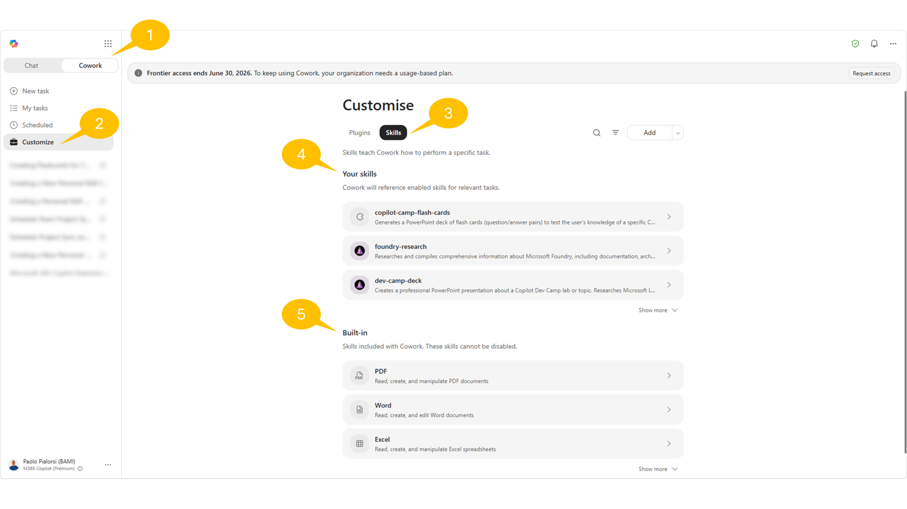
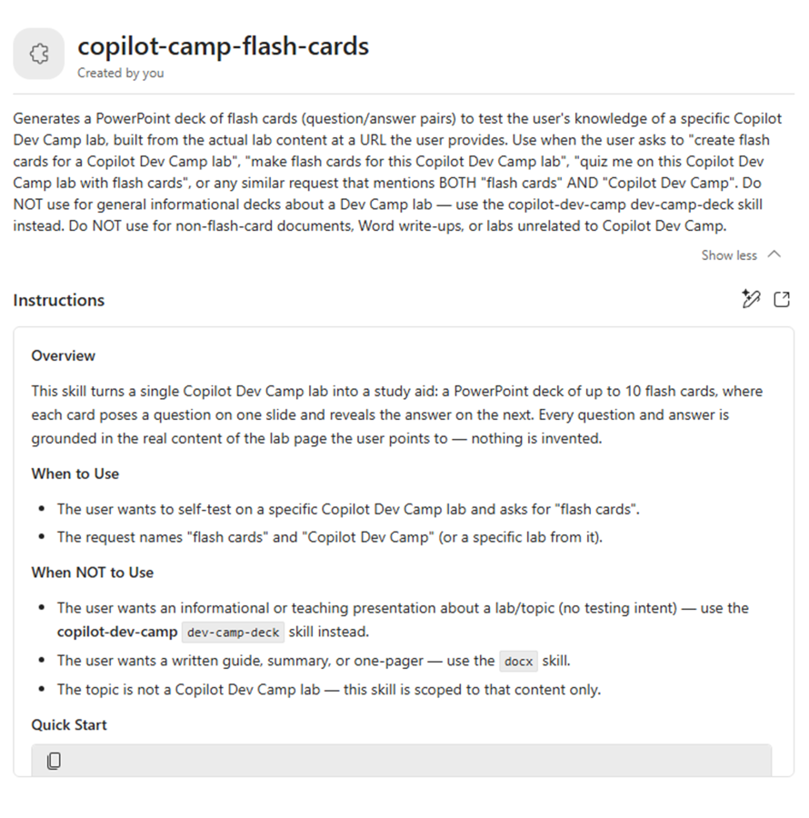
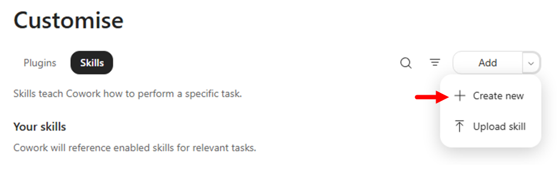
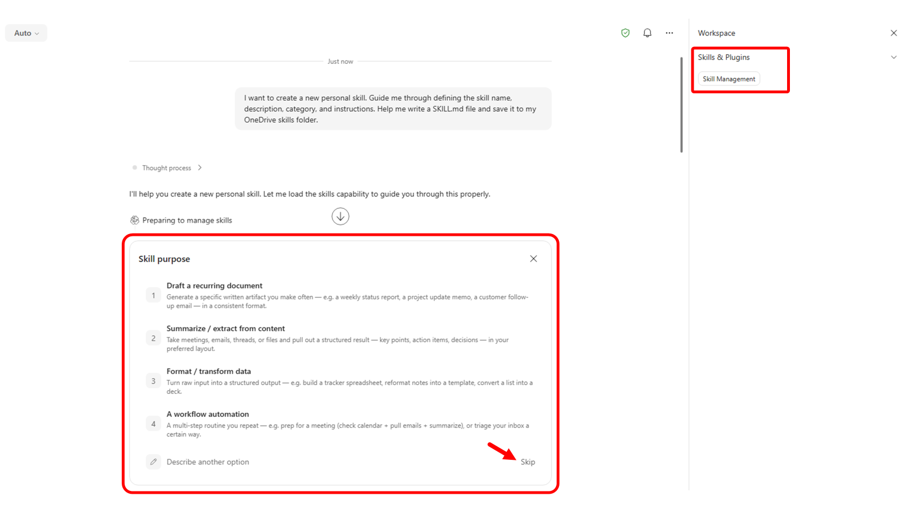
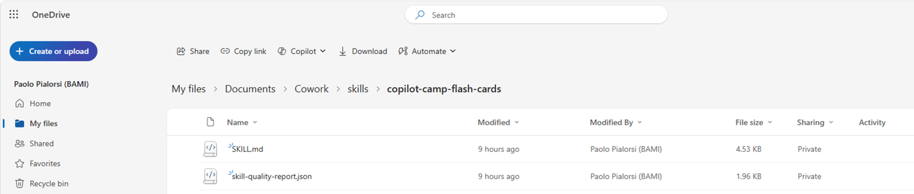
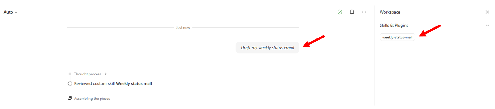

Lab CWRK01 - Copilot Cowork Build your first skill
Do these labs if you want to extend Copilot Cowork
Table of Contents
In this lab, you'll learn how to build custom Agent Skills for Copilot Cowork, manage skills in the product, and publish your own skills.
At a high level, an Agent Skill is a structured instruction file that teaches Cowork when and how to execute a specific domain workflow. Skills are not generic prompts. They include intent signals, execution guidance, and output expectations so Cowork can reliably select and run the right behavior for a given request.
By the end of this lab, you will:
- Understand what skills are and when to create custom skills
- Manage built-in and custom skills from the Customize experience
- Create a skill using the native Add skill guided flow
- Create skills manually at a lower level (for example with VS Code), package, and upload them
Exercise 1: Understand what Agent Skills are
In this exercise you will build a clear mental model of skills, where they fit in Cowork orchestration, and how they differ from plugins.
Step 1: Review the role of skills in Cowork
Cowork uses skills as reusable execution patterns. During a task, Cowork can load one or more skills based on conversation intent and then run a step-by-step workflow.
From a practical perspective, skills help Cowork:
- Recognize when a specialized workflow is needed
- Apply consistent instructions instead of ad-hoc prompting
- Produce predictable outputs for recurring business tasks
Unlike one-off prompts, skills are durable assets you can reuse across many conversations.
Step 2: Compare built-in skills and custom skills
Cowork already includes built-in skills for common tasks like documents, communication, scheduling, and enterprise search. You can create custom skills when:
- You need organization-specific process logic
- You need consistent formatting or governance for outputs
- You want Cowork to trigger a domain workflow from clear phrases
Custom skills complement built-in skills. They do not replace all of Cowork behavior, but they extend Cowork with your business context.
Step 3: Distinguish skills from plugins
Keep this distinction in mind:
- Skills define behavior and workflow instructions
- Plugins package integrations, connectors, and optional skill bundles
Choose a skill-first approach when your main goal is guided task execution. Add plugin/connectors when the workflow also needs external systems.
Exercise 2: Manage skills in the Customize panel
In this exercise you will explore how to manage available skills directly in Cowork.
Step 1: Open the Customize experience
Open Microsoft 365 Copilot, switch to 1️⃣ Cowork, and select 2️⃣ Customize in the left navigation.
You should see two tabs:
- Plugins
- Skills
Select 3️⃣ Skills and review:
- Your skills: 4️⃣ skills you created or acquired through plugin packages
- Built-in: 5️⃣ skills shipped by Cowork

Use the search box and source filters to narrow results and quickly find specific skills. Select a skill to open its details page.
For your own skills, if any, validate you can perform management operations such as:
- Edit instructions
- Open the file location in OneDrive
- Download the skill
- Share the skill
- Delete the skill

After any edits, start a new conversation to test behavior changes.
Exercise 3: Create a skill with the native Add skill flow
In this exercise you will use Cowork's built-in guided authoring experience from Customize -> Skills.
Step 1: Start guided creation from Customize
In Customize -> Skills, select Add -> Create new.

Important
Authoring and testing a custom skill in Copilot Cowork will consume Copilot Credits.
Cowork opens a guided conversation to collect your skill definition. Notice that Cowork is now using a native skill with name Skill management to guide you through the creation of a new skill.
Now Cowork will prompt you to select the purpose of your skill. The available options are:
- Writing & drafting: Generates recurring written content in your voice/format.
- Summarizing & briefing: Condenses meetings, email threads, documents, or channels into a consistent structured summary.
- Data & analysis: Pulls and formats data into a standard layout — trackers, dashboards, recurring metric reports.
- Process automation: Runs a multi-step routine you do often — e.g. triage inbox, prep for a meeting, end-of-day wrap-up.
- Describe another option: to freely describe your goal

Select the option Skip to provide free text inscrutions for your custom skill.
For example, you can use the following text:
Generate a set of flash cards in PowerPoint to test my knowledge about a specific lab of the Copilot Dev Camp.
Trigger this skill whenver the prompt includes "Create flash cards for a Copilot Dev Camp lab" or something similar, but still referring to "flash cards" and "Copilot Dev Camp".
The result should be a PowerPoint deck with no more than 10 flash cards based on the actual content of the lab referenced, as a URL, by the user. If there is no URL of the lab, ask the user to provide it.
Name the skill "copilot-flash-cards".
Cowork will start processing your request, will check the skill name, the capacity of your Cowork profile, it will generate the skill, store it in your OneDrive for Business, validate it and produce a quality report.
Info
You can have up to 50 custom skills configured in your profile, so when you create a new skill Cowork checks if you are at limit with your capacity.
You can test your skill directly from Cowork and you can iterate the process to fine tune the skill. For example, you can provide the following prompt and check the result.
Test it with the following URL: https://microsoft.github.io/copilot-camp/pages/extend-m365-copilot/11-mcp-app/
Step 2: Save and verify where the skill is stored
Once you are happy with your skill, simply close the current session. Cowork stored the skill in your OneDrive for Business in a folder with the following name:
/Documents/Cowork/skills/<name-of-the-skill>
You can browse your OneDrive for Business and check the content of the new skill folder.

Start a new Cowork task and test a prompt that should trigger your new skill. For example, you can use the following prompt:
Generate flash cards for the Copilot Dev Camp lab available at the following URL: https://microsoft.github.io/copilot-camp/pages/extend-m365-copilot/08-mcp-server/
In the right side panel, open Skills and verify your custom skill appears among the active skills used during execution.
If the skill does not activate, refine the description to be more specific about when Cowork should use it, then test again in a new conversation.
Exercise 4: Create skills manually with VS Code
In this exercise you will build a skill at a lower level by creating the SKILL.md file yourself. Or you can also download one of the many skills already available on the Internet and upload it to Cowork. For example, you can consider the site Skills.sh and search for specific skill in there.
Step 1: Create the skill folder and author the SKILL.md file
Create a new folder on your file system, for example name it weekly-status-mail and open it with Visual Studio Code. Add an empty SKILL.md file to the folder using the VS Code file explorer.
Open the file in VS Code and add YAML frontmatter with name and description.
Use this baseline template:
---
name: weekly-status-mail
description: |
Drafts a concise weekly status-update email to the user's team, covering open
tasks, upcoming meetings, and action items, with light emoji formatting in the
body. Use when the user asks to "draft my weekly status email", "write my weekly
team update", "send my team the weekly status", "create my Monday status mail",
"weekly status update for the team", or "recap this week for the team".
Do NOT use for leadership or executive updates and cross-functional stakeholder
communications — use stakeholder-comms instead. Do NOT use for one-off
announcements or non-status emails — use the Outlook tools directly.
cowork:
category: communication
icon: Mail
---
## Overview
Produces a short, scannable weekly status email addressed to the user's team. It
gathers the user's open tasks, upcoming meetings, and outstanding action items
from Microsoft 365, then composes a friendly email with emoji section headers and
saves it as a **draft for review** — it never sends automatically.
## When to Use
- The user wants their recurring weekly status note to their team.
- The user asks to "recap this week" or "write my Monday update" for the team.
- The user wants open tasks, upcoming meetings, and action items rolled into one email.
## When NOT to Use
- Updates aimed at leadership, executives, or cross-functional stakeholders — use **stakeholder-comms** instead.
- One-off announcements, replies, or any non-status email — use the Outlook tools directly.
- A status *document* or spreadsheet rather than an email — use **docx** or **xlsx**.
## Quick Start
````
User: "Draft my weekly status email for the team"
1. Resolve the week window (today → next 7 days) and the team recipients.
2. Gather: open tasks, upcoming meetings, action items from M365.
3. Compose the email body with emoji section headers (concise bullets).
4. Save as a draft with CreateDraftMessage and show it for review.
````
## Core Instructions
### Step 1: Resolve recipients and time window
- Determine the week window: today through the next 7 days, in the user's local time zone.
- Resolve "the team" with people tools — `GetDirectReportsDetails` for the user's reports, or a team distribution list the user names. Never guess email addresses.
- If the team cannot be resolved, draft anyway with an empty To line and a clear `[Add team recipients]` note, and flag it for the user.
### Step 2: Gather open tasks
- Use `SearchM365` (sources: email, teams) for open/pending work, and `ListMessages` with `flagged_only=true` for follow-up flags.
- Include only items found in tool results. If none are found, write "Nothing outstanding to report."
### Step 3: Gather upcoming meetings
- Call `ListCalendarView` for the next 7 days; list notable meetings with day and time.
- Respect privacy: render `private`/`confidential` events as "Busy" or a time block — do not echo their subject lines.
### Step 4: Gather action items
- Pull action items from recent meeting recaps and recent email/Teams threads (`SearchM365`, recent `GetMeetingTranscript` when a relevant meeting exists).
- Attribute each item to an owner only when the source states it. Do not invent owners or due dates.
### Step 5: Compose and draft
- Build the body using the Output format below, with emoji section headers.
- Save the draft with `CreateDraftMessage` (To = resolved team, Subject = "Weekly Status — week of {date}").
- Present the draft to the user for review; do not send.
## Output
- **Format:** Email draft. Subject: `Weekly Status — week of {Mon DD}`.
- **Tone:** Warm, professional, concise. **Length:** roughly 120-200 words — scannable bullets, not paragraphs.
- **Body structure** (emoji headers, each section 2-5 bullets; omit a section's bullets and write "Nothing to report" when empty):
````
👋 Hi team — here's where things stand this week.
📋 Open Tasks
- {task} — {short status}
📅 Upcoming Meetings
- {Day, time} — {meeting}
✅ Action Items
- {action} — {owner, if known}
Thanks!
{User first name}
````
## Guardrails
- **Draft only — never auto-send.** Always use `CreateDraftMessage` and present the draft for the user to review and send themselves.
- **Ground every item in retrieved data.** If a search returns nothing for a section, say "Nothing to report" — never fabricate tasks, meetings, owners, or dates.
- **Resolve recipients via people tools**; never construct or guess email addresses. Confirm the team list with the user before they send.
- **Respect calendar privacy** — show private/confidential events as a time block, not their subject.
- **Keep it concise.** If a section has many items, surface the top few and note the rest exist rather than dumping everything.
- Use a light touch with emojis — section headers and the greeting, not every bullet.
You can download the whole source code of the skill from this file path.
Important checks:
- Keep
namein kebab-case - Ensure
namealigns with the skill folder identity - Keep description explicit about trigger scenarios
Step 2: Upload the skill in Cowork
In Cowork, open Customize, select Skills, and use the Upload skill option under the Add action to upload your package.
After upload, verify the included skills appear in Your skills.
If validation fails, check common issues:
- Missing
SKILL.md - Invalid YAML frontmatter
namemismatch with folder identity- Invalid kebab-case naming
Step 3: Test end-to-end usage
Start a new conversation and run prompts that should activate your uploaded skills. For example, you can use the following prompt:
Draft my weekly status email
Verify activation from the side panel and confirm outputs follow the expected workflow and format.

CONGRATULATIONS!
You have completed Lab CWRK01 - Copilot Cowork Build your first skill!
Continue with Lab CWRK2, to build your first Plugin for Copilot Cowork.